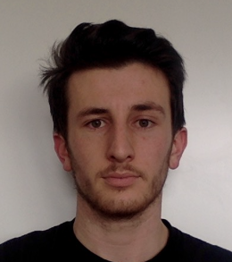

Salut à tous, moi c'est Léo

Je suis actuellement en 3ème année à Audencia. Je suis un passionné de sports et plus particulièrement de ski alpin et de tennis.
Mon parcous à Audencia
J'ai rejoint Audencia après 2 ans de prépa à Lyon (Saint-Just). Voici mes choix d'options dans le cadre de mon cursus :
- Au S1, j'ai choisi l'option Culture digitale
- Au S2, j'ai choisi l'option Introduction au code
- Enfin, au S4, j'ai choisi la majeure Marketing à l'ère digitale
Tennis
J'ai commencé le tennis à l'âge de 6 ans dans le tennis club de Saint-Lary-Soulan. Comme tout fan de tennis qui se respecte, j'aspire à voir jouer Federer et Nadal depuis maintenant de nombreuses années sans succès (ou presque).
Les tournois auxquels j'ai assistés
- Masters 1000 Paris-Bercy 2012 quarts de finale: hécatombe avant et pendant le tournoi, Nadal n'est pas présent, Federer non plus et les têtes de série tombent les unes après les autres.
- Masters 1000 Paris-Bercy 2019 1er tour au 3ème tour : une fois de plus, Federer ne participe pas au tournoi. Cependant j'ai pu assister à 2 matches de Nadal.
- Roland-Garros 2020 tours indéfinis : Federer ne se faisant plus tout jeune, il s'agira sans doute de ma seule chance de le voir (s'il décide cette fois-ci de ne pas m'éviter). Opportunité également de voir Nadal à l'oeuvre sur terre battue.
Ski alpin
J'ai commencé la pratique régulière du ski à l'âge de 5/6 ans puisque j'ai grandi dans les Hautes-Pyrénées, à quelques minutes de différentes stations (Saint-Lary, Piau-Engaly, Peyragudes, Val Louron). J'ai "rompu" avec le ski lorsque mes parents ont déménagé en provence, mais je compte bien me rapprocher des montagnes de nouveau lors de ma vie professionnelle.
Projets liés au ski alpin
- Assister à des épreuves de coupe du monde : Il y a plusieurs étapes de coupe du monde qui se déroulent en France dans les Alpes (Courchevel, Chamonix, Val d'Isère). Parmi les skieurs que j'aimerais le plus voir, il y a Mikaela Shiffrin en slalom, Clément Noël en slalom et Alexis Pinturault en géant.
- Travailler pour Rossignol : Souhait qui répond à plusieurs de mes critères, travailler proche de stations de ski (ici, proche de Grenoble) et dans un secteur d'équipementier sportif.